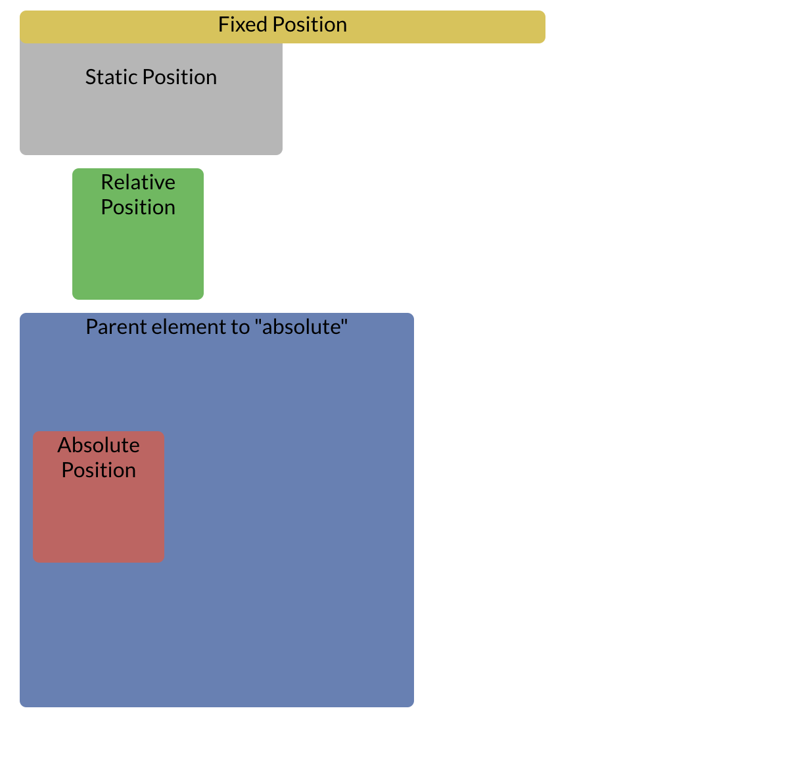

The Position property in css defines how an element is laid out.
Static Positioning. This is the default type of positioning. The element will appear in position of the normal flow of the html document.
Relative positioning. This defines where the element will be in relation to itself. If you were to define an element's position as left: 40px; then the element would move 40 pixels to the right of its static position. If no positioning attributes are defined, then the element will stay in the same space
Fixed positioning. This makes the element position itself relative to the browser’s window/viewport as opposed to the positioning in the html document. This means no matter where you scroll in the page, the element will stay in the same place. This type of positioning must be used carefully as it can block other elements.
Absolute positioning. This allows an element to be positioned in relation to their parent element (which has a relative postion defined). If there is no parent element then it will be postioned in to relation to the html document. Absolute positioning breaks the element away from the normal document flow and can overlap other elements.
In the diagram above you can see the Static element is first in the html document but it is overlaid by the fixed element which has been fixed to the top. The fixed element breaks the normal flow of the document.
The relative element is in the second spot in the html file but has been defined to be 40 pixels away from the left side
The absolute element has been defined to be 100 pixels down from within its relative parent element.